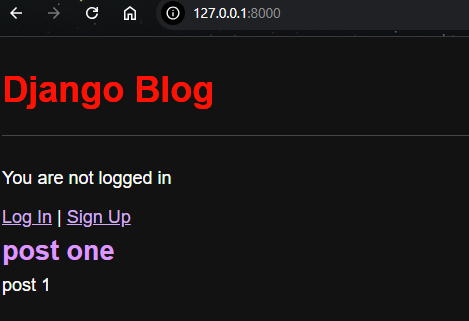

Madison Davis
Welcome to my portfolio!
email: md192263@umconnect.umt.edu
address: 1000 North Higgins
About Me:
Hi, my name is Madison Davis and I'm a computer science and astronomy student astronomy at the University of Montana entering my third year. Though originally from Phoenix, I moved here and have grown to love it. I've been interested in computers and known I wanted to pursue a career as a sotware developer for many years now; each day this is reinforced as my love of coding only increases.
Experience:
I have been working with computer for a few years now, whether that be in my job or through school. I had my first real introduction to coding my first semester here and began my job working for campus IT.
-- Classes --
-- Jobs --
- Intro to web Development
- CSCI 150, 151, 152
- Careers in Computer Science
- Tech Educator and Consultant
- Research Computing Support
As I have taken more computer science and programming classes I have been building up my knowledge in a several different languages, frameworks, and gaining a general knowdlge surrounding computers.
Skills:
- Python
- Java
- HTML
- GitHub
- VS Code
- Django
- Windows
- Mac
- Linux
Projects:
This is a showcase of the projects I have completed in CSCI 258: Web Application Development
-- Company Website --
For this project I created a multi-page company website using Django. This project made use of inheritance, class based views, and more advanced testing. It made use of URLS, templates and views in order to seamlessly create a website.
-- Blog --
This project is a practice blog where users can read, edit and create posts. It also introduces CSS for styling and makes use of static files. I create a database with three fields: Title, Author and Body, and used that to update my blog. This project uses primary keys to keep track of which users go to which posts. It allows users to add, delete and edit posts. It also incorporates a login and signup button using forms.
